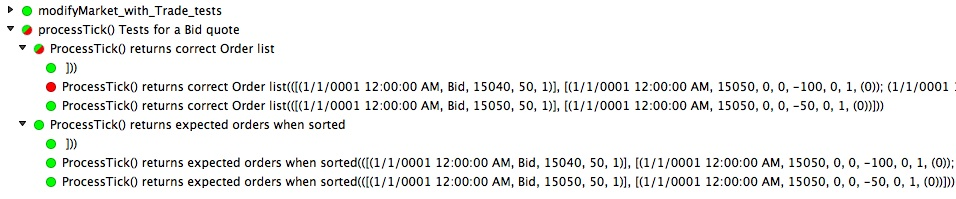

Unit Testing Sequences of Events using TestCaseSource, FsUnit, and Xamarin
In Febuary, I attended my first F# meetup here in Japan. Actually, they don't call it a meetup.
The term in Japanese is F#談話室 which can be roughly translates as F# lounge.
As the name suggests, the atmosphere was pretty laid back. Many members seemed to know each other.
The group was small which gave the gathering an intimate feeling. The attendees included F# MVPs,
the translator of a number of F# programming books, and the author of the open source FSRandom library.
In case you didn't know, this is also the group that came up with the idea for the F# Advent Calendar.
Since this was my first meeting, I decided to give a 'spur of the moment' lightning talk
on my experience using the <TestCaseSource> attribute with FsUnit and Xamarin.
I discussed the difficulty of finding examples using F# and how I finally found the
information I was looking for in a Japanese blog post. There's a lot of code in
the post so even non-Japanese speakers may find it useful. The rest of the talk focused
on the advantages of using it for certain cases of TDD.
Specifically, I have found this approach useful where you have the following scenario
- You have a state
- This state is modified by a some stream of data
- The modification produce some effect that you want to capture
In functional languages this is easy to model:
- Pass in some state and modifier (or event) to a function
- Return the modified state and accumulate a list of effects
I find myself using this approach when I what to unit test permutations of sequences of events.
We can do this simply by recursively iterating over a list of data events,
while accumulating a list of responses. Below I show how we can combine
this with NUnit's <TestCaseSource> attribute tag to create unit tests
for sequences of events. Here, I am targeting Mono/.Net 4.5 using Xamarin
and the following libraries
1: 2: 3: |
open System open NUnit.Framework open FsUnit |
A Simple Example
Let's look at a toy example of this pattern.
1: 2: 3: 4: 5: 6: 7: 8: 9: 10: 11: |
module SimpleExample = let modifyStateAndProduceEffect state modifier = let newState = state * (1. + modifier) newState, newState - state // a list of events or data points let ms = [-0.03; -0.02; 0.03; 0.021] // down -3%, -2%, then back up +3%, +2.1% let rs = ms |> List.scan (fun (state, _) modifier -> modifyStateAndProduceEffect state modifier) (1., 0.) |
The List.scan operation builds a list of results by iterating over a list of data points, applying a function,
and accumulating the results of that function. This nicely simulates the piping of a series of events through a function.
The results can easily be parsed using simple list operations.
1: 2: 3: 4: 5: 6: 7: |
// drop the head pair used for initialization, and then split into state and change lists
let justTheStates, justTheEffects = rs |> List.tail |> List.unzip
// justTheStates : float list = [0.97; 0.9506; 0.979118; 0.999679478]
// justTheEffects : float list = [-0.03; -0.0194; 0.028518; 0.020561478]
let finalState = justTheStates |> List.reduce (fun _ n -> n)
// val finalState : float = 0.999679478
|
Here's an example of using the [<TestCaseSource>] attribute to create unit tests for the above.
We begin by defining a TestFixture and some sample data.
1: 2: |
[<TestFixture>] type ``A Sample Test`` () = |
1: 2: 3: 4: 5: 6: |
static member TestData =
[|
[|[], []|]; // empty case
[|[-0.01; -0.02; 0.02; 0.01 ], [ -0.01; -0.0198; 0.019404; 0.00989604 ]|]; // test 1
[|[-0.03; -0.02; 0.03; 0.021], [ -0.03; -0.0194; 0.028518; 0.020561478]|]; // test 2
|]
|
There are a few important things to note about creating unit cases using [<TestCaseSource>].
- NUnit expects it in the form of a
static member - It is defined as an array of arrays. i.e.
[ ][ ] - You can put almost any object inside the inner nested array.
- The contents of each of the cells in the inner array will be passed one by one to your unit test
In this example, I use a two element tuple (list * list) as a simple way of keeping the system under test's inputs and outputs clear
Unit tests for our simple example
Below is a custom comparision function and two unit tests. FsUnit already has a great set of
built-in comparison functions, but for some list tests, or tuple comparisons you may
need to write your own. The first is an example of using one of FsUnit's built in tests
should haveLength. The second uses the approxEqual function to test if each of the
pairs in the lists have approximately the same value.
1: 2: |
let approxEqual ls1 ls2 e =
List.forall2 (fun (x1:float) (x2:float) -> Math.Abs(x1 - x2) <= e) ls1 ls2
|
1: 2: 3: 4: 5: 6: 7: 8: 9: 10: 11: 12: 13: 14: 15: 16: 17: |
[<TestCaseSource("TestData")>]
member x.``Resulting list has the correct length`` (testData: float list * float list) =
let data, expectedResults = testData
let states, results =
data
|> List.scan (fun (s, _) m -> SimpleExample.modifyStateAndProduceEffect s m) (1., 0.)
|> List.tail |> List.unzip
results |> should haveLength expectedResults.Length
[<TestCaseSource("TestData")>]
member x.``Results in list approximiately match expected results`` (testData: float list * float list) =
let data, expectedResults = testData
let states, results =
data
|> List.scan (fun (s, _) m -> SimpleExample.modifyStateAndProduceEffect s m) (1., 0.)
|> List.tail |> List.unzip
approxEqual results expectedResults 1e-9 |> should be True
|
Note, F# may not have enough information to infer the type of data being supplied to
the unit tests. You may need to specify it as I have above: (testData: float list * float list)
A Real-World Example
Here is a real-world example. The system under test is a function called processTick.
This function is part of a larger Order Inference algorithm designed to process financial data.
Specifically, this function determines what changes in buy and sell sizes took placed
to generate the tick. It is one step in reverse engineering the flow of order book information.
1:
|
let processTick orderBook tick =
|
It has the following signature
val processTick : orderBook:OrderBook -> tick:Tick -> OrderBook * Order list
It takes an OrderBook and Tick and returns a tuple consisting of an
OrderBook and a list of type Order. Like the example above,
we have a state: OrderBook. That state is modified by new piece of data: a Tick event.
In turn, that generates some information in the form of a list of type Order
A Tick usually consists of one of two types; Quote or Trade.
Here, we use a record to model each of them. A Quote can either be on the Bid side or Ask side.
So a Tick is either a Bid quote, an Ask quote, or a Trade (trades have no side).
The overall structure is succinctly expressed as a discriminate union.
1: 2: 3: 4: 5: 6: 7: 8: 9: |
module OrdInfer = type Trade = { time:DateTime; price:float; size:int; } type Quote = { time:DateTime; price:float; size:int; depth:int } type Tick = | Bid of Quote | Ask of Quote | Trade of Trade |
As noted above, the OrderBook holds the current state of the market.
It includes the current best Market as well as a Map of PriceNode keyed to prices.
It is defined as follows:
1:
|
type OrderBook = { current: Market; prices:Map<float, PriceNode>; tickSize:float; }
|
The processTick function returns an updated OrderBook and a List of type Order that is defined as follows:
1: 2: 3: 4: |
type Order = { time:DateTime; price:float;
buySize:int; sellSize:int;
buyReduce:int; sellReduce:int;
bidDepth:int; askDepth:int }
|
Unit testing multiple permutations of a sequence of events
Below, I have include three types of test cases. The first two cases are fairly straight forward. Using TDD, we can begin with these simple cases, and then build our code up to handle the extreme edge cases. Because the unit tests rely on list comparison, any arbitrary length of events can be tested using the same set of unit tests. That is, once the initial test harness and comparison functions have been written we can make our tests as complex as necessary.
1: 2: 3: 4: 5: 6: 7: 8: 9: 10: 11: 12: 13: 14: 15: 16: |
type ``processTick() Tests for a Bid quote`` () = // market setup included for reference // tckSz, bid2, bidSz2, bid1, bidSz1, last, lsSz, ask1, askSz1, ask2, askSz2 // 10., 15040., 100, 15050., 100, 15060., 0, 15070., 100, 15080., 100 static member TestCases = [| // Case 1: single event -> single effect [| [(System.DateTime.MinValue.AddTicks(int64 2), "Bid",15050., 50,1);], // best bid decreases ([ (System.DateTime.MinValue.AddTicks(int64 2), 15050., 0, 0, -50, 0, 1, 0);]) |]; // Case 2: single event -> multiple effects [| [ (System.DateTime.MinValue.AddTicks(int64 2), "Bid",15040., 50,1);], // best bid ticks down and decreases ([ (System.DateTime.MinValue.AddTicks(int64 2), 15050., 0, 0,-100, 0, 1, 0); (System.DateTime.MinValue.AddTicks(int64 2), 15040., 0, 0, -50, 0, 1, 0);]) |]; |
The third case is where I find combining [<TestCaseSource>] and list comparisons become very useful.
Here we simulate a large trade causing the Ask to become the Bid. We feed in three events;
a Trade, then a Bid update and an Ask update.
The order here matters. The algorithm needs to be designed to handle the various permutations. In real-time these 3 events could arrive in one of 6 different ways. For more complex sequences, the permutations become too large to test every case, but you still can use this approach to test a representative sample of the edge cases.
1: 2: 3: 4: 5: 6: 7: 8: 9: 10: 11: |
// Case 3: multiple events -> multiple effects (Ask becomes Bid)
[| [(System.DateTime.MinValue.AddTicks(int64 2), "Trade", 15070., 110, 1);
(System.DateTime.MinValue.AddTicks(int64 3), "Bid" , 15070., 10, 1);
(System.DateTime.MinValue.AddTicks(int64 4), "Ask" , 15080., 120, 1);],
// my expected response
([(System.DateTime.MinValue.AddTicks(int64 2), 15070.0, 110, 10, 0, 0, 0, 0);
(System.DateTime.MinValue.AddTicks(int64 3), 15070.0, 10, 0, 0, -100, 1, 0);
(System.DateTime.MinValue.AddTicks(int64 4), 15070.0, 0, 0, 0, 0, 0, 1);
(System.DateTime.MinValue.AddTicks(int64 4), 15080.0, 0, 20, 0, 0, 0, 1);]) |];
|]
|
Comparison using a few helper functions
We'll need to write some helper function to do the actual comparisons.
But, first we'll write two functions to transform our [<TestCaseSource>] unit test data
into a list of type Tick (our events) and a list of type Order (our expected results)
1: 2: 3: 4: 5: 6: 7: 8: 9: 10: 11: 12: 13: 14: |
let getTick time tickType price size depth =
match tickType with
| "Bid" -> OrdInfer.Bid {OrdInfer.dfltQuote with time = time; price = price; size = size; depth = depth}
| "Ask" -> OrdInfer.Ask {OrdInfer.dfltQuote with time = time; price = price; size = size; depth = depth}
| "Trade" -> OrdInfer.Trade {OrdInfer.dfltTrade with time = time; price = price; size = size}
| _ -> OrdInfer.Trade {OrdInfer.dfltTrade with time = time; price = 0.;size = 0}
let tupleToTicks ls = List.map(fun (tm, t, p, s, d) -> getTick tm t p s d) ls
let tupleToOrders ts = ts |> List.map(fun (t, p, b, s, br, sr, bd, ad) ->
{OrdInfer.dfltOrder with time=t; price=p;
buySize=b; sellSize=s;
buyReduce=br; sellReduce=sr;
bidDepth=bd; askDepth=ad})
|
Next, we'll write some functions to pipe our sequence of Ticks through our system under test
processTick and return a tuple containing two lists of type OrderBook, and Order. These
are the results of our sequence unit tests.
1: 2: 3: 4: 5: 6: |
let results data =
let ss, oss = // oss is list of list. Easier to handle if just list
data
|> List.scan (fun (ob, os) t -> OrdInfer.processTick ob t) (initialMkt, [])
|> List.tail |> List.unzip
ss, (oss |> List.fold (fun o ol -> o @ ol) []) // list of list -> list
|
Finally, we write some simple list comparison functions. F# lists already implement equality, so the basic comparision function is simple.
1:
|
let listsMatch (ls1: 'a list) (ls2: 'a list) = ls1 = ls2
|
I have also included an additional custom comparison where the list are first sorted.
1:
|
let listsMatchIfSorted ls1 ls2 = listsMatch (ls1 |> List.sort) (ls2 |> List.sort)
|
Often, it helps to know if your sequence tests are failing because the order is different or because the values themselves are different. Running both these unit tests together makes that very clear.
1: 2: 3: 4: 5: 6: 7: 8: 9: 10: 11: 12: 13: 14: 15: 16: 17: 18: 19: |
[<TestCaseSource("TestCases")>]
member x.``ProcessTick() returns correct Order list``
(testData: (DateTime * string * float * int * int) list * (DateTime * float * int * int * int * int * int * int) list) =
let rawData, rawExpectedResults = testData
let states, orders = rawData |> uTest_Helper.tupleToTicks |> uTest_Helper.results
let expectedResults = rawExpectedResults |> uTest_Helper.tupleToOrders
uTest_Helper.listsMatch orders expectedResults |> should be True
[<TestCaseSource("TestCases")>]
member x.``ProcessTick() returns expected orders when sorted``
(testData: (DateTime * string * float * int * int) list * (DateTime * float * int * int * int * int * int * int) list) =
let rawData, rawExpectedResults = testData
let states, orders = rawData |> uTest_Helper.tupleToTicks |> uTest_Helper.results
let expectedResults = rawExpectedResults |> uTest_Helper.tupleToOrders
uTest_Helper.listsMatchIfSorted orders expectedResults |> should be True
|
Here's an example using Xamarin's Nunit test runner. The list equality test failed, but the pre-sorted list equality test passed indicating there is a problem with the order, but not the values

In Summary
This approach demonstrates how to use [<TestCaseSource>] and some simple list operations such as
List.scan and List.fold to unit test a sequence of events.
There are many more elaborate tests that can be done using this pattern. You could check for matching buySize, or some other field in the record. With the initial helper functions in place, writing custom comparison functions becomes very easy and List operations provide an elegant way to iterate through your test sequences.
Full name: OrderInfer.Tests.SimpleExample.modifyStateAndProduceEffect
Full name: OrderInfer.Tests.SimpleExample.ms
Full name: OrderInfer.Tests.SimpleExample.rs
module List
from Microsoft.FSharp.Collections
--------------------
type List<'T> =
| ( [] )
| ( :: ) of 'T * 'T list
interface IEnumerable
interface IEnumerable<'T>
member Head : 'T
member IsEmpty : bool
member Item : index:int -> 'T with get
member Length : int
member Tail : 'T list
static member Cons : head:'T * tail:'T list -> 'T list
static member Empty : 'T list
Full name: Microsoft.FSharp.Collections.List<_>
Full name: Microsoft.FSharp.Collections.List.scan
Full name: OrderInfer.Tests.SimpleExample.justTheStates
Full name: OrderInfer.Tests.SimpleExample.justTheEffects
Full name: Microsoft.FSharp.Collections.List.tail
Full name: Microsoft.FSharp.Collections.List.unzip
Full name: OrderInfer.Tests.SimpleExample.finalState
Full name: Microsoft.FSharp.Collections.List.reduce
Full name: Microsoft.FSharp.Collections.List.forall2
val float : value:'T -> float (requires member op_Explicit)
Full name: Microsoft.FSharp.Core.Operators.float
--------------------
type float<'Measure> = float
Full name: Microsoft.FSharp.Core.float<_>
--------------------
type float = Double
Full name: Microsoft.FSharp.Core.float
static val E : float
static val PI : float
static member Abs : value:decimal -> decimal + 6 overloads
static member Acos : d:float -> float
static member Asin : d:float -> float
static member Atan : d:float -> float
static member Atan2 : y:float * x:float -> float
static member BigMul : a:int * b:int -> int64
static member Ceiling : d:decimal -> decimal + 1 overload
static member Cos : d:float -> float
...
Full name: System.Math
Math.Abs(value: sbyte) : sbyte
Math.Abs(value: int64) : int64
Math.Abs(value: int) : int
Math.Abs(value: float32) : float32
Math.Abs(value: float) : float
Math.Abs(value: decimal) : decimal
Full name: OrderInfer.Tests.A Sample Test.TestData
Full name: OrderInfer.Tests.A Sample Test.( Resulting list has the correct length )
Full name: Microsoft.FSharp.Collections.list<_>
from OrderInfer.Tests
Full name: OrderInfer.Tests.A Sample Test.( Results in list approximiately match expected results )
{time: DateTime;
price: float;
size: int;}
Full name: OrderInfer.Tests.OrdInfer.Trade
type DateTime =
struct
new : ticks:int64 -> DateTime + 10 overloads
member Add : value:TimeSpan -> DateTime
member AddDays : value:float -> DateTime
member AddHours : value:float -> DateTime
member AddMilliseconds : value:float -> DateTime
member AddMinutes : value:float -> DateTime
member AddMonths : months:int -> DateTime
member AddSeconds : value:float -> DateTime
member AddTicks : value:int64 -> DateTime
member AddYears : value:int -> DateTime
...
end
Full name: System.DateTime
--------------------
DateTime()
(+0 other overloads)
DateTime(ticks: int64) : unit
(+0 other overloads)
DateTime(ticks: int64, kind: DateTimeKind) : unit
(+0 other overloads)
DateTime(year: int, month: int, day: int) : unit
(+0 other overloads)
DateTime(year: int, month: int, day: int, calendar: Globalization.Calendar) : unit
(+0 other overloads)
DateTime(year: int, month: int, day: int, hour: int, minute: int, second: int) : unit
(+0 other overloads)
DateTime(year: int, month: int, day: int, hour: int, minute: int, second: int, millisecond: int) : unit
(+0 other overloads)
DateTime(year: int, month: int, day: int, hour: int, minute: int, second: int, calendar: Globalization.Calendar) : unit
(+0 other overloads)
DateTime(year: int, month: int, day: int, hour: int, minute: int, second: int, kind: DateTimeKind) : unit
(+0 other overloads)
DateTime(year: int, month: int, day: int, hour: int, minute: int, second: int, millisecond: int, calendar: Globalization.Calendar) : unit
(+0 other overloads)
val int : value:'T -> int (requires member op_Explicit)
Full name: Microsoft.FSharp.Core.Operators.int
--------------------
type int<'Measure> = int
Full name: Microsoft.FSharp.Core.int<_>
--------------------
type int = int32
Full name: Microsoft.FSharp.Core.int
{time: DateTime;
price: float;
size: int;
depth: int;}
Full name: OrderInfer.Tests.OrdInfer.Quote
| Bid of Quote
| Ask of Quote
| Trade of Trade
Full name: OrderInfer.Tests.OrdInfer.Tick
union case Tick.Trade: Trade -> Tick
--------------------
type Trade =
{time: DateTime;
price: float;
size: int;}
Full name: OrderInfer.Tests.OrdInfer.Trade
{current: Market;
prices: Map<float,PriceNode>;
tickSize: float;}
Full name: OrderInfer.Tests.OrdInfer.OrderBook
{time: DateTime;
last: float;
bestBid: float;
bestAsk: float;
isOpen: bool;
isInit: bool;}
Full name: OrderInfer.Tests.OrdInfer.Market
module Map
from Microsoft.FSharp.Collections
--------------------
type Map<'Key,'Value (requires comparison)> =
interface IEnumerable
interface IComparable
interface IEnumerable<KeyValuePair<'Key,'Value>>
interface ICollection<KeyValuePair<'Key,'Value>>
interface IDictionary<'Key,'Value>
new : elements:seq<'Key * 'Value> -> Map<'Key,'Value>
member Add : key:'Key * value:'Value -> Map<'Key,'Value>
member ContainsKey : key:'Key -> bool
override Equals : obj -> bool
member Remove : key:'Key -> Map<'Key,'Value>
...
Full name: Microsoft.FSharp.Collections.Map<_,_>
--------------------
new : elements:seq<'Key * 'Value> -> Map<'Key,'Value>
{time: DateTime;
price: float;
bid: int;
ask: int;}
Full name: OrderInfer.Tests.OrdInfer.PriceNode
{time: DateTime;
price: float;
buySize: int;
sellSize: int;
buyReduce: int;
sellReduce: int;
bidDepth: int;
askDepth: int;}
Full name: OrderInfer.Tests.OrdInfer.Order
Full name: OrderInfer.Tests.OrdInfer.processTick
Full name: OrderInfer.Tests.uTest_Helper.getTick
from OrderInfer.Tests
Full name: OrderInfer.Tests.OrdInfer.dfltQuote
union case OrdInfer.Tick.Trade: OrdInfer.Trade -> OrdInfer.Tick
--------------------
type Trade =
{time: DateTime;
price: float;
size: int;}
Full name: OrderInfer.Tests.OrdInfer.Trade
Full name: OrderInfer.Tests.OrdInfer.dfltTrade
Full name: OrderInfer.Tests.uTest_Helper.tupleToTicks
Full name: Microsoft.FSharp.Collections.List.map
Full name: OrderInfer.Tests.uTest_Helper.tupleToOrders
Full name: OrderInfer.Tests.OrdInfer.dfltOrder
Full name: OrderInfer.Tests.uTest_Helper.results
Full name: OrderInfer.Tests.OrdInfer.processTick
Full name: OrderInfer.Tests.uTest_Helper.initialMkt
Full name: Microsoft.FSharp.Collections.List.fold
Full name: OrderInfer.Tests.uTest_Helper.listsMatch
Full name: OrderInfer.Tests.uTest_Helper.listsMatchIfSorted
Full name: Microsoft.FSharp.Collections.List.sort
Full name: OrderInfer.Tests.processTick() Tests for a Bid quote.TestCases
val int64 : value:'T -> int64 (requires member op_Explicit)
Full name: Microsoft.FSharp.Core.Operators.int64
--------------------
type int64<'Measure> = int64
Full name: Microsoft.FSharp.Core.int64<_>
--------------------
type int64 = Int64
Full name: Microsoft.FSharp.Core.int64
Full name: OrderInfer.Tests.processTick() Tests for a Bid quote.( ProcessTick() returns correct Order list )
val string : value:'T -> string
Full name: Microsoft.FSharp.Core.Operators.string
--------------------
type string = String
Full name: Microsoft.FSharp.Core.string
from OrderInfer.Tests
Full name: OrderInfer.Tests.processTick() Tests for a Bid quote.( ProcessTick() returns expected orders when sorted )